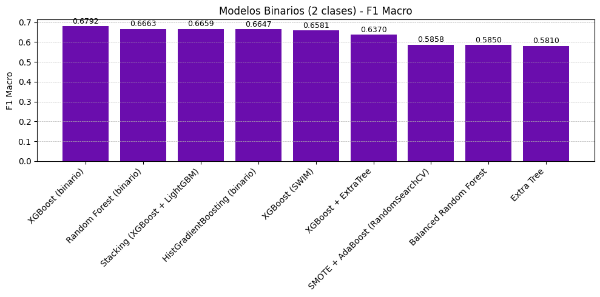
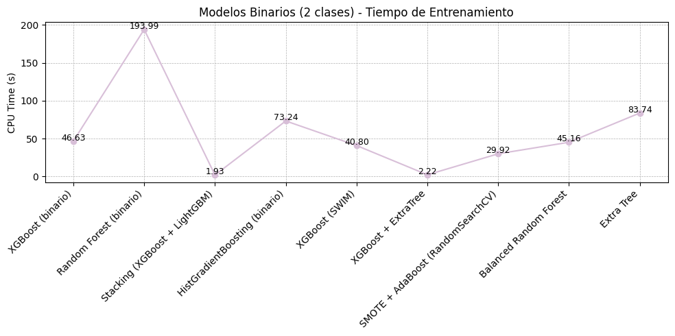
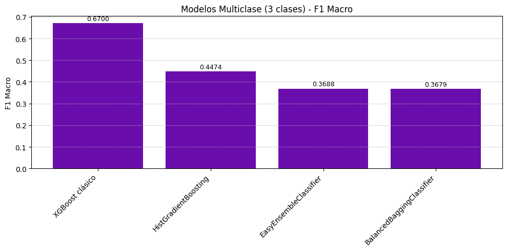
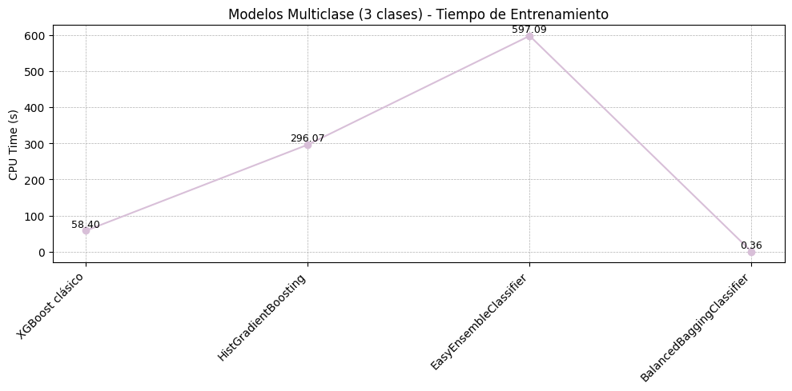

Comparación de Modelos Alternativos#
Introducción#
Luego de identificar que el modelo XGBoost clásico ofrecía el mejor rendimiento en el enfoque multiclase, el siguiente paso fue intentar superarlo en desempeño predictivo (F1 macro) o mejorar su eficiencia computacional (CPU Time). Esta búsqueda derivó en un proceso experimental riguroso en el que se exploraron múltiples algoritmos de clasificación, distintas estrategias de balanceo de clases y técnicas de optimización hiperparamétrica.
Durante estas pruebas se aplicaron técnicas como SMOTE, SMOTE-NC, ADASYN y SWIM para mitigar el desbalance de clases. Además, se emplearon métodos avanzados de ajuste de hiperparámetros como GridSearchCV, RandomizedSearchCV y Optuna. Este proceso no solo confirmó la solidez del modelo XGBoost, sino que también permitió descubrir que una combinación Stacking de XGBoost + LightGBM, originalmente explorada como una alternativa más, ofrecía un balance notable entre desempeño y eficiencia.
A continuación, se presentan por separado los modelos evaluados en el enfoque binario (2 clases) y los aplicados a la clasificación multiclase (3 clases).
Modelos Evaluados – Clasificación Binaria (2 clases)#
Modelo |
F1 Macro |
AUC |
CPU Time (s) |
|---|---|---|---|
XGBoost (binario) |
0.6792 |
0.8143 |
46.63 |
Stacking (XGBoost + LightGBM) |
0.6659 |
0.7764 |
1.93 |
Random Forest (binario) |
0.6663 |
0.7872 |
193.99 |
HistGradientBoosting (binario) |
0.6647 |
0.8014 |
73.24 |
XGBoost + ExtraTree |
0.6370 |
0.7419 |
2.22 |
SMOTE + AdaBoost (RandomizedSearchCV) |
0.5858 |
0.6973 |
29.92 |
Balanced Random Forest |
0.5850 |
0.7515 |
45.16 |
XGBoost (SWIM) |
0.6581 |
0.8277 |
40.80 |
Extra Tree |
0.5810 |
0.6745 |
83.74 |
Extreme Machine Learning + SMOTE |
0.5749 |
N/D |
9.58 |
import pandas as pd
import matplotlib.pyplot as plt
---------------------------------------------------------------------------
ModuleNotFoundError Traceback (most recent call last)
Cell In[1], line 1
----> 1 import pandas as pd
2 import matplotlib.pyplot as plt
ModuleNotFoundError: No module named 'pandas'
# Modelos Binarios (2 clases)
data_binario = [
{"Modelo": "XGBoost (binario)", "F1 Macro": 0.6792, "AUC": 0.8143, "CPU Time (s)": 46.63},
{"Modelo": "Stacking (XGBoost + LightGBM)", "F1 Macro": 0.6659, "AUC": 0.7764, "CPU Time (s)": 1.93},
{"Modelo": "Random Forest (binario)", "F1 Macro": 0.6663, "AUC": 0.7872, "CPU Time (s)": 193.99},
{"Modelo": "HistGradientBoosting (binario)", "F1 Macro": 0.6647, "AUC": 0.8014, "CPU Time (s)": 73.24},
{"Modelo": "XGBoost + ExtraTree", "F1 Macro": 0.6370, "AUC": 0.7419, "CPU Time (s)": 2.22},
{"Modelo": "XGBoost (SWIM)", "F1 Macro": 0.6581, "AUC": 0.8277, "CPU Time (s)": 40.80},
{"Modelo": "SMOTE + AdaBoost (RandomSearchCV)", "F1 Macro": 0.5858, "AUC": 0.6973, "CPU Time (s)": 29.92},
{"Modelo": "Balanced Random Forest", "F1 Macro": 0.5850, "AUC": 0.7515, "CPU Time (s)": 45.16},
{"Modelo": "Extra Tree", "F1 Macro": 0.5810, "AUC": 0.6745, "CPU Time (s)": 83.74},
{"Modelo": "Extreme Machine Learning + SMOTE", "F1 Macro": 0.5749, "AUC": None, "CPU Time (s)": 9.58}
]
df_binario = pd.DataFrame(data_binario)
# F1 Macro (binario)
sorted_binario = df_binario.dropna().sort_values(by="F1 Macro", ascending=False)
plt.figure(figsize=(10, 5))
bars = plt.bar(sorted_binario['Modelo'], sorted_binario['F1 Macro'], color='#6A0DAD')
plt.ylabel("F1 Macro")
plt.title("Modelos Binarios (2 clases) - F1 Macro")
plt.xticks(rotation=45, ha='right')
plt.grid(True, axis='y', linestyle='--', linewidth=0.5)
for bar in bars:
height = bar.get_height()
plt.text(bar.get_x() + bar.get_width()/2, height + 0.005, f"{height:.4f}", ha='center', va='bottom', fontsize=9)
plt.tight_layout()
plt.show()
# CPU Time (binario)
plt.figure(figsize=(10, 5))
plt.plot(sorted_binario['Modelo'], sorted_binario['CPU Time (s)'], marker='o', linestyle='-', color='#D8BFD8')
plt.ylabel("CPU Time (s)")
plt.title("Modelos Binarios (2 clases) - Tiempo de Entrenamiento")
plt.xticks(rotation=45, ha='right')
plt.grid(True, linestyle='--', linewidth=0.5)
for i, val in enumerate(sorted_binario['CPU Time (s)']):
plt.text(i, val + 1, f"{val:.2f}", ha='center', fontsize=9)
plt.tight_layout()
plt.show()


Análisis de los Modelos Binarios#
XGBoost (binario): Fue el punto de partida del enfoque binario. Obtuvo la mejor F1 macro (0.6792), con un AUC alto (0.8143), pero su tiempo de entrenamiento fue considerable (46.63 s).
Stacking (XGBoost + LightGBM): Descubierto durante la etapa experimental, este modelo alcanzó un F1 macro competitivo (0.6659) y un tiempo excepcionalmente bajo (1.93 s), convirtiéndose en la solución más equilibrada entre rendimiento y eficiencia.
Random Forest y HistGradientBoosting: Ambos modelos se aproximaron a los resultados de XGBoost, con F1 macro por encima de 0.66, pero con tiempos de entrenamiento muy elevados, por lo que fueron descartados para uso práctico.
XGBoost + ExtraTree: Esta combinación intentó complementar las capacidades del boosting con mayor diversidad. Ofreció un F1 macro de 0.6370 con buena eficiencia (2.22 s).
XGBoost con SWIM: Utilizando una estrategia de balanceo novedosa, este modelo logró un AUC superior (0.8277), pero su F1 macro fue ligeramente inferior (0.6581) y el tiempo de ejecución, elevado.
Modelos con AdaBoost, Random Forest balanceado y Extreme Machine Learning: Aunque ofrecieron tiempos moderados, sus F1 macro fueron considerablemente más bajos (rango: 0.5749–0.5858), y por tanto fueron descartados.
Modelos Evaluados – Clasificación Multiclase (3 clases)#
Modelo |
F1 Macro |
AUC |
CPU Time (s) |
|---|---|---|---|
XGBoost clásico |
0.6700 |
0.7100 |
58.40 |
HistGradientBoosting |
0.4474 |
0.7505 |
296.07 |
EasyEnsembleClassifier |
0.3688 |
0.6849 |
597.09 |
BalancedBaggingClassifier |
0.3679 |
0.4753 |
0.36 |
ImAdaBoost |
0.5372 |
N/D |
N/D |
import pandas as pd
import matplotlib.pyplot as plt
# Modelos Multiclase (3 clases)
data_multiclase = [
{"Modelo": "XGBoost clásico", "F1 Macro": 0.6700, "AUC": 0.7100, "CPU Time (s)": 58.40},
{"Modelo": "HistGradientBoosting", "F1 Macro": 0.4474, "AUC": 0.7505, "CPU Time (s)": 296.07},
{"Modelo": "EasyEnsembleClassifier", "F1 Macro": 0.3688, "AUC": 0.6849, "CPU Time (s)": 597.09},
{"Modelo": "BalancedBaggingClassifier", "F1 Macro": 0.3679, "AUC": 0.4753, "CPU Time (s)": 0.36},
{"Modelo": "ImAdaBoost", "F1 Macro": 0.5372, "AUC": None, "CPU Time (s)": None}
]
df_multiclase = pd.DataFrame(data_multiclase)
# F1 Macro (multiclase)
sorted_multi_f1 = df_multiclase.dropna().sort_values(by="F1 Macro", ascending=False)
plt.figure(figsize=(10, 5))
bars = plt.bar(sorted_multi_f1['Modelo'], sorted_multi_f1['F1 Macro'], color='#6A0DAD')
plt.ylabel("F1 Macro")
plt.title("Modelos Multiclase (3 clases) - F1 Macro")
plt.xticks(rotation=45, ha='right')
plt.grid(True, axis='y', linestyle='--', linewidth=0.5)
for bar in bars:
height = bar.get_height()
plt.text(bar.get_x() + bar.get_width()/2, height + 0.005, f"{height:.4f}", ha='center', va='bottom', fontsize=9)
plt.tight_layout()
plt.show()
# CPU Time (multiclase)
sorted_multi_time = df_multiclase.dropna().sort_values(by="F1 Macro", ascending=False)
plt.figure(figsize=(10, 5))
plt.plot(sorted_multi_time['Modelo'], sorted_multi_time['CPU Time (s)'], marker='o', linestyle='-', color='#D8BFD8')
plt.ylabel("CPU Time (s)")
plt.title("Modelos Multiclase (3 clases) - Tiempo de Entrenamiento")
plt.xticks(rotation=45, ha='right')
plt.grid(True, linestyle='--', linewidth=0.5)
for i, val in enumerate(sorted_multi_time['CPU Time (s)']):
plt.text(i, val + 10, f"{val:.2f}", ha='center', fontsize=9)
plt.tight_layout()
plt.show()


Análisis de los Modelos Multiclase#
XGBoost clásico: Se posicionó como el mejor modelo en el enfoque multiclase, con un F1 macro de 0.67 y AUC de 0.71. Fue el punto de comparación para todo el proyecto.
HistGradientBoosting: A pesar de tener un AUC alto (0.7505), su F1 macro fue bajo (0.4474) y su tiempo de entrenamiento excesivo.
EasyEnsemble y BalancedBaggingClassifier: Mostraron bajo desempeño en F1 macro, especialmente BalancedBagging, que además tuvo un AUC muy bajo. Fueron descartados para este problema.
ImAdaBoost: A pesar de su enfoque adaptativo, su F1 macro (0.5372) y ausencia de métricas complementarias lo dejan por debajo de XGBoost.
Conclusión#
El proceso comparativo permitió confirmar que, aunque el modelo XGBoost clásico binario es fuerte en precisión, su costo computacional lo hace menos práctico. El modelo Stacking (XGBoost + LightGBM) emerge como la mejor opción global, con una F1 macro cercana al máximo alcanzado y un tiempo de entrenamiento extremadamente bajo.
Los modelos multiclase, en cambio, mostraron rendimientos generales inferiores, reforzando la decisión de reformular el problema como binario. Modelos como EasyEnsemble y BalancedBagging mostraron escaso valor agregado para este tipo de datos.
En conjunto, esta etapa permitió validar rigurosamente las decisiones de modelado y dejó establecida una solución sólida y reproducible para la predicción de desenlaces graves en víctimas de violencia basada en género.